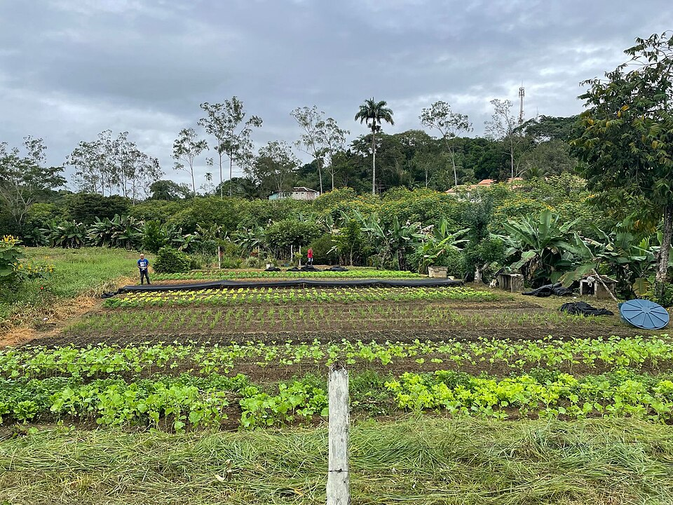

Triagem
Marque os sinais e veja os problemas compatíveis, o nível de atenção e o próximo passo seguro.
Sinais do campo. Orientação com segurança.
O Praga Zero ajuda pequenos produtores a organizar os sinais observados na plantação, ver os problemas fitossanitários compatíveis e encontrar o próximo passo seguro, por texto ou áudio, sem substituir a assistência técnica.

Como funciona
Você conta o que está vendo na plantação e o Praga Zero organiza as informações para você decidir com mais segurança.
Tomate, milho, feijão, couve ou mandioca.
Folha amarela, furos, bichinhos, manchas... do jeito que você vê na roça.
Problemas compatíveis, nível de atenção, cuidados sem veneno e quando procurar o técnico.
O Praga Zero nunca indica agrotóxico, produto, marca ou dose. Pela Lei 14.785/2023, esse tipo de produto exige receita de um profissional habilitado. Aqui você encontra só cuidados culturais, mecânicos e biológicos, e o caminho até a assistência técnica.
Áreas do site
Marque os sinais e veja os problemas compatíveis, o nível de atenção e o próximo passo seguro.
Os 11 problemas mais comuns das 5 culturas e os cuidados sem uso de químicos.
O problema, quem queremos ajudar e por que o sistema nunca indica veneno.
Como o índice é calculado, o que significa cada nível e como usar com segurança.
Mande sua dúvida, sugestão ou proposta de parceria para a equipe.
Conheça a equipe que criou o Praga Zero.